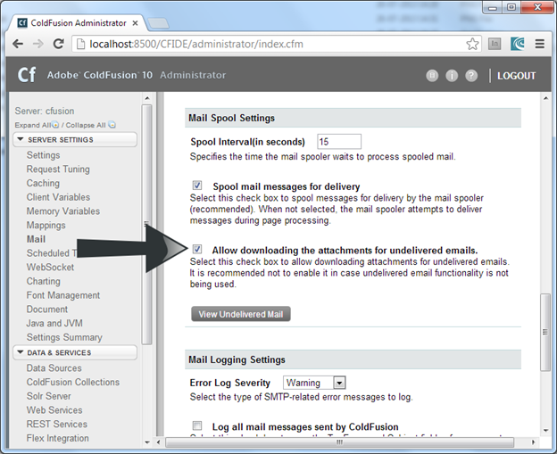
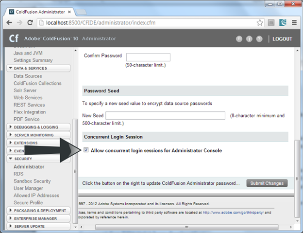
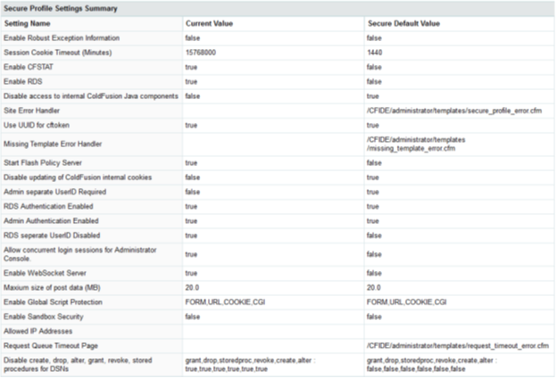

This document describes all the security enhancements made in ColdFusion 11. This update fixes a few security issues and has strengthened the Server. Some notable security enhancements are described in the following sections.
Preventing attachment download for undelivered mails
Changes have been made to the ColdFusion Server to prevent downloading attachments of undelivered Emails. You can allow/disallow downloading of attachments for undelivered mails through the ColdFusion Administrator as follow:
- Login to ColdFusion Administrator
- Click Server Settings > Mail
- Go to Mail Spool Settings and check/uncheck Allow downloading the attachments for undelivered emails

Changes in Administrator API
The Administrator API CFC, mail.cfc has also been updated with a new key allowDownload being added to GetMailProperty and SetMailProperty. You can use this API to enable/disable downloading attachments for undelivered mails programmatically. The CFC for this Administrator API are located in the cf_web_root/CFIDE/adminapi/mail.cfc.
Sending encrypted mails using the <CFMail> tag
You can now start sending encrypted mails using the <cfmail> tag. The following list describes the new attributes added to this tag to support sending encrypted mails:
- encrypt=”true/false” – Enable/disable sending encrypted mails.
- recipientCert = <path> – Provide the path to the recipient’s public key certificate.
- encryptionAlgorithm = <encryption_algorithm>– The algorithm to use to encrypt the mails. You can use one of the following algorithms:
- DES_EDE3_CBC,
- RC2_CBC (default)
- AES128_CBC
- AES192_CBC
- AES256_CBC
For more information on the this tag, see the <cfmail> tag.
Changes in Secure Profile
See this document.
Support for concurrent login sessions for the same user
You can login and access an application through multiple concurrent login sessions for the given user. This option is enabled by default. If you have any security concern, please disable this option in ColdFusion Administrator.
The following changes have been made to support multiple concurrent logins:
A new attribute, allowconcurrent has been added to the <cflogin> tag to allow concurrent logins:
<cflogin allowconcurrent="true|false">
The default value is true. If allowconcurrent is set to true, the Server allows concurrent logins for a user.
A new attribute, session has been added to the <cflogout> tag to select the right user to logout:
<cflogout session="all|current|others">
The default value is current. If session is set to all, all the authenticated sessions for the current user will terminate, if it set to current, only the current session will terminate, and if it set to others, except the current session all the other sessions will be terminated.
For administrator, to enable/disable concurrent login sessions, perform the following tasks:
- Login to ColdFusion Administrator
- Go to Security > Administrator Page
- Select Allow Concurrent Login Sessions for Administrator Console

Note that by default concurrent login sessions will be enabled. Also, when the secure profile is enabled, concurrent login will be disabled.
Changes in Administrator API
The Administrator API CFC, security.cfc has also been updated with the following new APIs:
- isAllowCuncurrentAdminLogin – Find out of concurrent login sessions are allowed
- setAllowConcurrentAdminLogin – Enable/Disable concurrent login sessions
You can use this APIs to enable/disable concurrent login sessions programmatically. The CFC for this Administrator API are located in the cf_web_root/CFIDE/adminapi/security.cfc.
Note: When secure profile is enabled on the Server, the ColdFusion Administrator will run in a single login session per username mode (concurrent mode disabled).
Support for PBKDF2 key derivation
See GeneratePBKDFKey
Enabling Secure Profile
With ColdFusion 10 and above you can use Secure Profile to configure selected settings. Secure Profile can be enabled during installation. You can also provide a list of IP addresses which will be allowed to access Administrator Console. In ColdFusion 11, secure profile configuration facility is extended to the Administrator console to support post installation configuration.
To do this, from the ColdFusion Administration console, select from the ColdFusion Administrator console, Security > Secure Profile (displayed below) and click the Enable Secure Profile check box to use ColdFusion’s recommended default secure profile settings.
Administrator settings affected by enabling Secure Profile
A table indicating the current settings, Secure default Settings, and values at the time you enable secure profile are displayed.
Enable or disable using this check box to change between Secure and Normal modes respectively.

Note: Secure Profile disables Directory Browsing for a stand alone ColdFusion installation with built-in web server. Directory browsing is not configured when Secure Profile is enabled/disabled from Administrator Console. |
Also, when the secure profile is enabled, addtoken attribute’s default value is false for the <cflocation> tag.
{kind=link}
{kind=link}
{kind=link}
{kind=link}